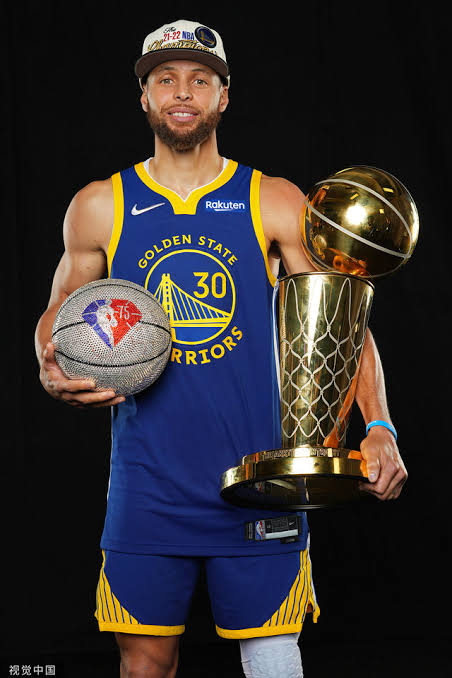

姓名：斯蒂芬·柯瑞（Wardell Stephen Curry II）

生日：1988/03/14
身高/體重：188 公分 / 84 公斤
NBA 選秀：2009 年選秀會上於第一輪第 7 順位被金州勇士隊選中。

斯蒂芬·柯瑞爸爸本身就是一位職業籃球員媽媽則是一位排球選手，他的家庭背景對他的職業生涯與個人性格都產生了深遠的影響。

職業背景：戴爾·柯瑞是 1980 至 1990 年代著名的 NBA 神射手。他在 NBA 效力了 16 個賽季，主要效力於夏洛特黃蜂隊，並曾榮獲 1993–94 賽季的 NBA 年度最佳第六人。
柯瑞從小就在 NBA 的籃球環境中長大，父親親自指導他正確的投籃姿勢與基本功。戴爾標誌性的快速出手與頂尖的投籃命中率，為柯瑞出色的投籃能力奠定了堅實的基礎。
職業背景：比斯蒂芬·柯瑞小兩歲的塞斯·柯瑞同樣是 NBA 的職業籃球員。雖然他在選秀會中落選，但憑藉著頂尖的三分球能力在聯盟中站穩腳跟，生涯三分球命中率長期名列聯盟前茅。

NBA 總冠軍：4 次（2015、2017、2018、2022）

NBA 總決賽最有價值球員（FMVP）：1 次（2022）

NBA 例行賽最有價值球員（MVP）：2 次（2015、2016）

革命性的三分球射程：柯瑞將有效的三分球投射射程延伸至近乎半場，引領了被稱為「Logo Shot」的超遠三分球風潮，並迫使對手防守圈必須大幅擴大。
迅捷的出手速度與無球走位：柯瑞擁有極快的投籃出手速度以及頂尖的無球走位能力。即使手中無球，他的進攻牽制力（Curry Gravity）也能吸引雙人包夾，為隊友創造大量輕鬆得分的空檔
頂級的運球技巧與拋投技術：除了外線投射，柯瑞極為擅長在運球時進行變速與變向，並能在禁區附近運用精準的拋投得分，擁有多元且全方位的進攻武器庫。